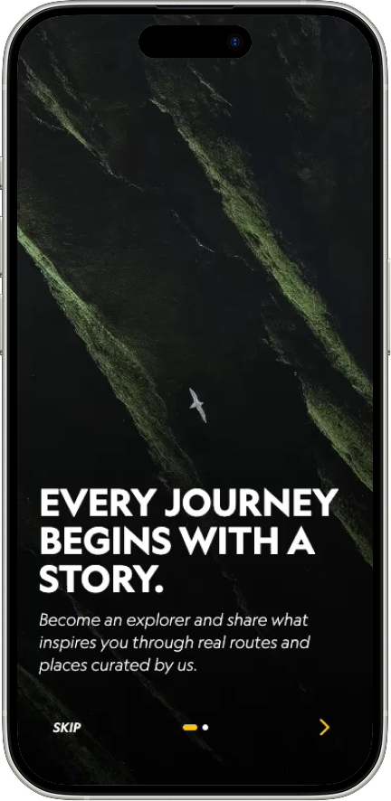
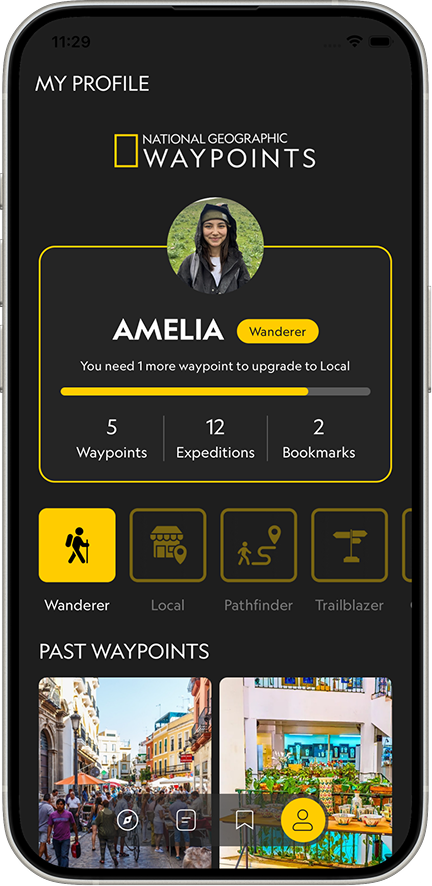

Inspiring the new wave of aspiring explorers to
connect with local culture through storytelling and
authentic choices for more meaningful travel.
Role
UX Researcher/ Content Direction
Team
Emily Feng, Jasmine Bamba, Khushy Brar, Sabrina Tang, Victoria Xi
Tools
Figma, Figjam
Timeline
July 2026 - August 2026
Team Collaboration
The team was structured as a real product design team, with researchers,
content designers, visual designers, and developers who work collaboratively across
the project to create a cohesive, research-informed product experience.
Together we:
Defined our problem space based on the researched target audience and challenges
Had numerous collaborative problem-solving sessions to work together to identify opportunities and develop solutions
Developed user flows to ensure a cohesive, intuitive experience
Conducted user testing to gather feedback and adapt the product where it fell short
My Role and Responsibilities
As one of two content designers and researchers I focused on:
Planned user testing by defining goals and developing scenario-based tasks to evaluate our solutions
Conducted secondary research of the problem space to ground our solutioning in user needs, behaviours, and industry context
Brainstormed features and concepts for the final experience that addressed identified needs
Created journey maps to inform our solution based on key behaviours, pain points
Collaborated on content strategy across the experience and for slide deck pitches
Evaluated design decisions against business objectives to ensure the product delivered value for both users and the business
The Problem
Insights from American Express. Adventure.com, HBX Group and Good Tourism Institute
As travel discovery becomes increasingly algorithm-driven, travellers are seeking more personal and meaningful experiences. Yet existing tools prioritize efficiency and popular destinations, making it difficult to uncover hidden places, connect with local communities, and embrace unexpected discoveries. Our challenge is to create a solution that balances enough planning to feel prepared while leaving room for genuine discovery.
Understanding the aspiring explorer
Their values and attitudes
Curiosity and Discovery
"I want to learn something I don't know anything about."
Personal Growth
"I want to come home feeling changed by this experience."
Connection and Belonging
"I want to feel connected to the people I meet and places I go."
Authenticity and Meaning
"I want experiences that feel real, not manufactured for tourists."
Purpose and Contribution
"I want my presence to matter and leave a positive impact."
What modern travellers value
72%
of travellers want to help boost tourism revenue in local economies.
75%
of travellers seek authentic experiences that reflect local culture.
84%
of travellers believe that preservation of cultural heritage is crucial.
76%
of travellers want their economic impact to spread equally through communities.
The Client
I collaborated with the other researcher to examine National Geographic's values, brand, and business goals, which helped ensure our solutions aligned with customer needs and business outcomes.
Why should an organization like National Geographic care?
1. Business values align with traveller
Choosing National Geographic as a client for this problem space felt natural as the values they are built mirror what travellers are seeking today. We used this as a foundation, continually referring back to it in our design decisions to ensure the travel experience values discovery over conventional tourism.
Traveller ValueBusiness Value
Curiosity and DiscoveryEducate: Learning from trusted experts and locals
Personal GrowthIlluminate: Uncovering the stories behind every place
Connection and BelongingConnect: Building relations with locals and nature
Authenticity and MeaningPioneer: Encouraging curiosity-led exploration
Purpose and ContributionProtect: Guiding responsible and sustainable travel
2. Opportunity to evolve with travellers
As travel shifts toward more personal and purpose-driven journeys, National Geographic has an opportunity to connect with a new generation of travellers. Extending its existing expertise into this evolving travel landscape can help the brand remain relevant while introducing its values to new audiences.
3. Expand the existing Explorer mindset
National Geographic is built around its Explorers, which include scientists, researchers, conservationists, and local experts who dive its work in science, conservation, education, and storytelling. Encouraging travellers to adopt this same Explorer mindset through culture-led travel, naturally extends the organization's mission.
By helping people learn, connect, and make more conscious choices, National Geographic can inspire meaningful experiences while strengthening its connection with travellers and supporting the communities and ecosystems they encounter.
Design Focus
How might we help aspiring explorers connect with local communities through culture-led travel?
The Opportunity
The goal of our solution is to create a deeper sense of belonging in the place the explorer is visiting. Encouraging, slower more intentional travel where the focus is on experiencing the place through participation rather than checking it off a list.

Three core values at play
National Geographic's values are key in keeping us intentional in every decision we make. Their alignment with our goal of creating more meaningful and exploratory travel gives us a clear framework for guiding our decisions and inspiring solutions.
Discovery
Helping travellers discover hidden local gems as they explore a destination, the app can provide real-time recommendations and encourage spontaneous detours to places they may have otherwise overlooked.
Education
Rather than simply highlighting locations, each recommendation will be enriched with storytelling, historical context, and local perspectives to reveal the cultural significance behind every place.
Documentation
Beyond the journey itself, travellers can document their discoveries like a National Geographic Explorer, transforming their experiences into a personalized magazine that captures the stories, places, and memories from their trip.
Usability Testing
Evaluating initial designs
Our initial attempt at the app was very different from where we landed and a lot of those changes were because of the user testing we conducted.
To keep research focused, we focused on the pre-trip and in-trip experience.
Research Objective
Evaluate whether the pre-trip planning experience helps aspiring explorers discover meaningful travel experiences through storytelling rather than traditional trip planning.
Hypothesis to test
Participants will learn something new about their destination through the pre-trip experience, inspiring them to seek out more meaningful activities.
The tool will provide personalized recommendations for participants to have interests and travel goals after completing the onboarding experience.
The tool will motivate engagement with local culture after learning about it through the app's stories, insights, and recommendations.
Methodology
Recruitment criteria Since we were unable to find the capacity in the end context of travel, we recruited traveling enthusiasts and aspiring travelers who are open to seeking unique experiences.
10 participantsIn person/ remote
5 tasks based on how each aspect of the pre-trip and in-trip flows would be experienced within each scenario.
Post-test interview for participants to openly share their thoughts and provide deeper insight into if and how they see the app fitting into their travel experiences.
Findings and revisiting solutions
Our research findings pushed us to critically evaluate whether our proposed solutions were actually supporting our goal of encouraging meaningful discovery and inspiring within National Geographic's values. The initial designs below were not needed as turns as they were evolved, pivoted, or removed as we uncovered insights that challenged our assumptions.
1. Pre-trip Discovery Questions
Discovery questions during onboarding were based around interests, travel styles and goals to help the app make personalized recommendations.
"Discovery questions feels like a psychology test, where they travel, there are things you know you want to see, want to see maybe similar things."
"The questions are made for people with one more brand of item for me, my goal then over it."
2. Story Capsules
Generated from onboarding, travellers can explore destinations and save places they are interested in to start shaping their trip. Each story shares the perspectives of locals and experts to learn about why a spot is worth experiencing.
"Is it an itinerary I'm supposed to be picking? My preferences in an app, what is it's asking to my itinerary?"
"It reads more information like locations, how close it is to my hotel, etc."
3. Map-based Discovery
An interactive map for travellers to find spots around them and discover story capsules.
"The map got my attention at the bottom. I found it interesting but not very useful when mapping the waypoints because I would like more interaction with it like google maps."
"Is the map just to look through? I would want a search feature?"
The team’s learnings
Leading the research and analysis, I identified that we were heading toward the conventions of existing travel-planning tools like Google Maps and TripAdvisor. I led the discussion to refocus the experience around curiosity, spontaneity, and local discovery, aligning each feature with National Geographic's strength in storytelling and culture-led exploration. This became a pivotal shift in our approach and making discovery the primary experience, with map-based navigation playing a supporting role.
Final Concept
Exploration
The explore page serves as the starting point for discovering nearby hidden gems. Travellers can browse Waypoints and choose where to visit based on the stories behind each destination.
Documentation
Travellers can capture experiences from their trip with notes and photos to transform them into their own personalized National Geographic magazines. Whether organized by destination, food or hidden gems, travellers have the creative freedom to craft the stories they want to tell.
Profile
Travellers can view their experiences at a glance from countries explored and bookmarked Waypoints to recent activity and magazine orders. Explorer Tiers reflect different travel styles, helping travellers track their progress and discover the type of explorer they are becoming.

Thinking about impact
With the travel landscape being constantly shifted by the influences of social media causing over tourism and reliance on digital travel, we considered how Waypoints could create meaningful experiences without contributing to these challenges. Additionally, we want to ensure the product could extend National Geographic's existing products, and mission to create long-term value.
How can we avoid the risk of causing over tourism in hidden spots?
By leveraging National Geographic's local partnerships, host communities get their own rules for tourism protecting quiet hidden gems from becoming overwhelmed hotspots. The result is a travel experience that remains eco-conscious, community-endorsed, and genuinely sustainable.
How does the product work within National Geographic's existing products and services?
We've combined and extended the value of the magazines and expedition tours into a single travel experience. Waypoints extends that experience of guided exploration into an on-the-go app that the company currently doesn't offer.
What's next for National Geographic in the long-term?
Each magazine purchase creates long-term value by supporting funding for future National Geographic Explorers and growing the community. The app also extends the iconic editorial into a mobile experience, connecting travellers with trusted expert and local perspectives.
Key Takeaways
The value of an aligned team
Establishing a shared perspective and approach to how we would address the problem space allowed us to stay consistent in our process and delivery. I learned how valuable it is to find out areas of expertise in the team to bounce ideas off of each other. Through discussions, learning from and challenging one another significantly strengthened our ideas.
Business and customer experience go hand-in-hand
I learned that a strong product experience needs to create value for both the customer and the business. While we focused on creating something travellers would genuinely want to use, we also had to ask whether the business would invest in it, how it could generate value, and what we were ultimately selling.
Brand as an anchor
A brand can be a powerful tool for ideation and a framework for decision-making. Using National Geographic's mission and values as a constant reference helped us ensure our ideas addressed the traveller's needs while maintaining authentic to the brand.